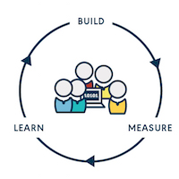

As software and IT become key drivers for innovation in most organizations these days, the speed of software delivery becomes very important to their success. More and more teams are adopting Continuous Delivery (CD) and expect to benefit from the accelerated feedback loop CD offers. To understand whether you are improving and delivering on your goals, you need to measure you CD process.
In this blog series, we will share :
- Why CD metrics are important
- What metrics you should measure
- A step by step guide to getting started
Continuous Delivery
Jez Humble defined continuous delivery on continuousdelivery.com as
“the ability to get changes of all types - including new features, configuration, bug fixes, and experiments - into production, safely and quickly in a sustainable way.”
In practice, a CD pipeline can look like this:

On the left of the diagram, the material is a repository such as git or svn. The delivery team commits a change, and your CI/CD server such as GoCD, runs build and unit tests. If these tests fail, the team immediately fixes any problems. The new version with those fixes goes further along the CD pipeline. If tests further down fails, again the team fixes them as quickly as possible. This process happens over and over in the life-cycle of an application.
Why measure your CD process
1. Measurement, Feedback, and improvement

If we consider a feedback cycle like “Build, Measure and Learn”, metrics are a way to set specific and measurable goals, direct activities towards achieving those goals, and help you understand if you are achieving those goals.
2. Predict future behavior
Data will provide you more accurate estimates to your business. For example, if you know your lead time, you can more accurately answer questions about how long it will take for something to be ready for your customers.
If you are considering parallelizing tasks or removing manual steps in your process, once you have some data about your current process, you can calculate the time savings of these improvement activities. From there, this data could potentially help your organization estimate dollars made or saved by certain specific improvements.
3. Continuous delivery benchmarking
Once you have some data, the values can be used as your baseline. Those baseline values are key to understanding whether you are improving your own process as well as key to understanding where you stand relative to “high performing” teams.

Credit: Forsgren PhD, Nicole. Accelerate: The Science of Lean Software and DevOps: Building and Scaling High Performing Technology Organizations (Kindle Location 564). IT Revolution Press. Kindle Edition.
What metrics are important to measure?
Once you introduce a CD pipeline and have established your path-to-production, the next step is to monitor its efficiency. We do not suggest measuring everything. At a high level here are the four metrics that we suggest using to help monitor your CD process. We’ll go deeper into details in future parts of the series.
1. Deployment Frequency a.k.a Throughput
Deployment freqency is a measure of how frequently your team deploys code. This metric is represented as a percentage. It is the answer to the question “how often does code reach a certain point in the CD pipeline”.
2. Lead Time
Lead time is a measure of how long it takes from committing code to deploying it to a production environment. This metric is represented as a duration. It is the answer to the question “how long does it take from committing code to it reaching production”.
3. Change Fail Percentage
Change fail percentage is a measure of the percentage of changes that result in a failure. This metric is represented as a percentage. It is the answer to questions like “what percentage of changes break builds” and “what percentage of deployments result in a service outage”.
4. Mean time to restore
Mean time to restore (MTTR) is a measure of how long it takes to fix a build failure. This metric is represented as a mean duration. It is the answer to questions like “how long does it take you to restore service during a failed deployment”.
Summary
This is the part 1 of our Actionable CD metrics blog series. We talked about why CD metrics are important, and an overview of the important metrics we recommend. In the next post, we will dig deeper into each metric.